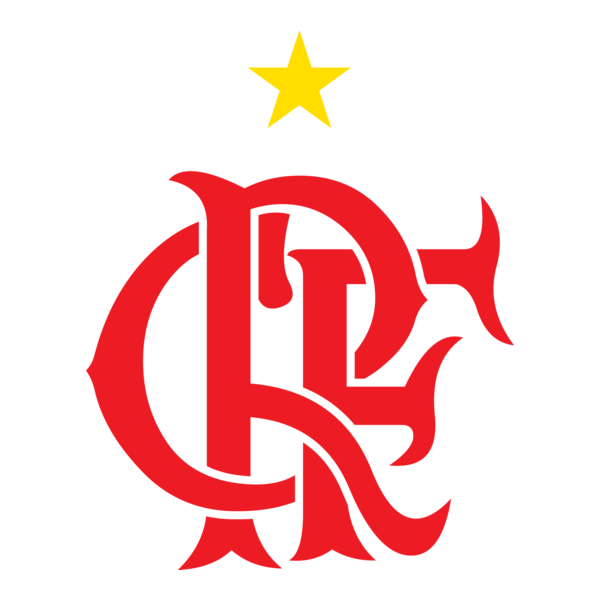

O Clube de Regatas do Flamengo, conhecido como Flamengo ou Mengão, é um dos maiores clubes de futebol do Brasil. Suas cores são o vermelho e o preto, e sua torcida é conhecida como Nação Rubro-Negra.
Atualmente, o Flamengo continua entre os principais times do futebol brasileiro, disputando grandes competições e buscando conquistar novos títulos.

Arthur Antunes Coimbra, conhecido como Zico ou Galinho de Quintino, é considerado o maior ídolo da história do Flamengo. Ele chegou ao clube ainda jovem e se tornou um dos maiores jogadores da história do futebol brasileiro.
Zico ficou conhecido por sua habilidade, seus gols, suas cobranças de falta e sua importância dentro de campo. Pelo Flamengo, conquistou títulos importantes e marcou uma geração de torcedores.
Atualmente, Zico continua ligado ao Flamengo como Embaixador do clube, representando o Flamengo no Brasil e no exterior.